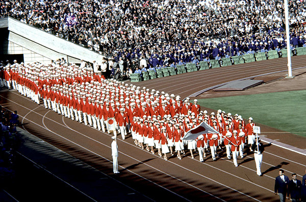
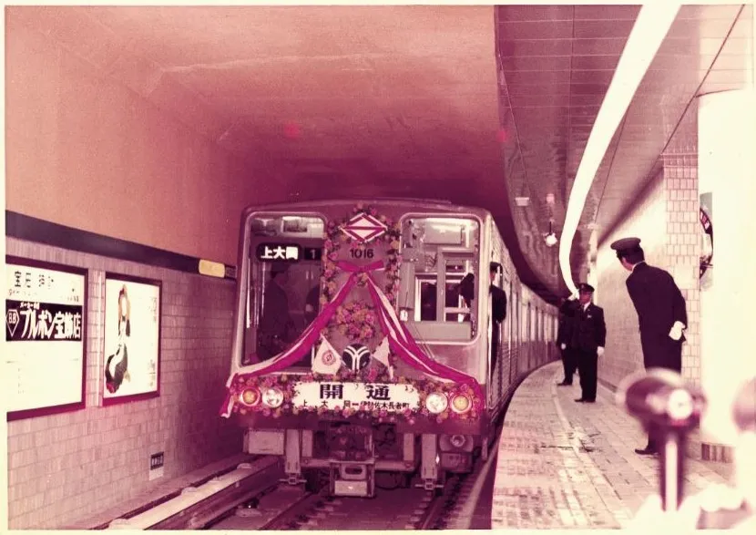
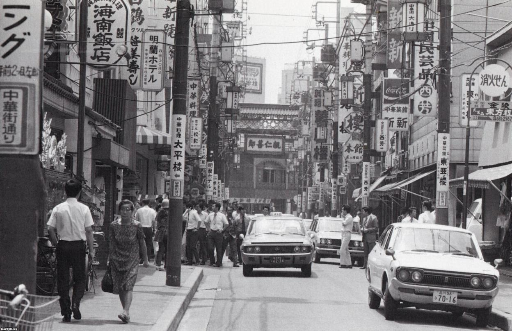
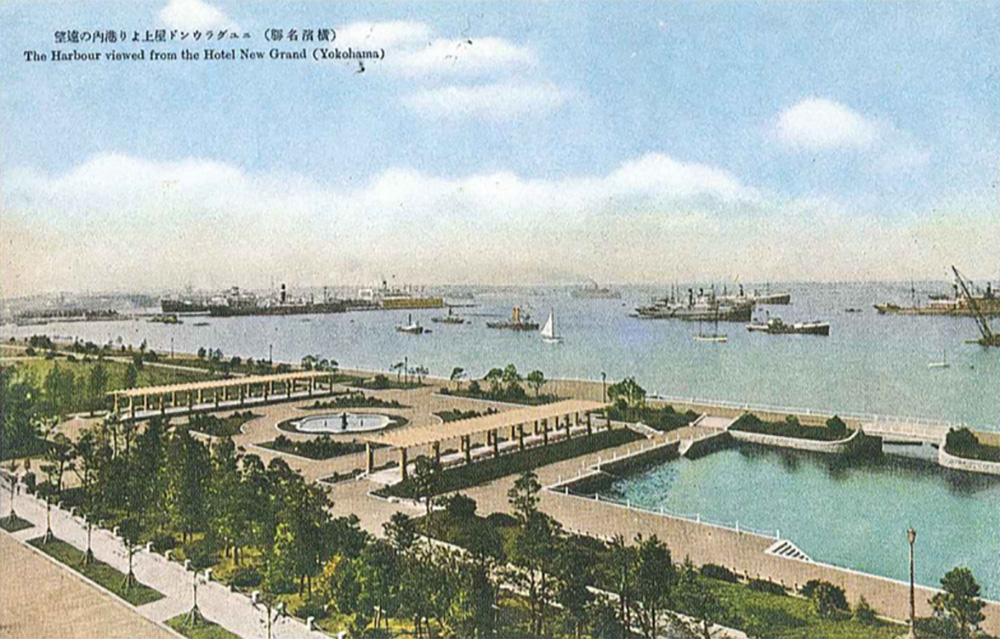
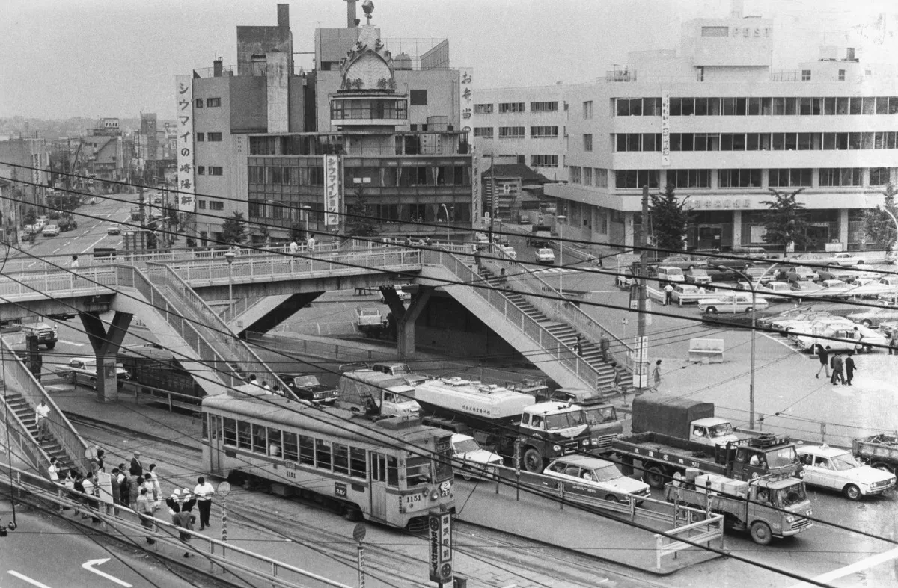

インタビュー
1964年に東京オリンピックが開催されましたが、横浜ではどのような盛り上がりがありましたか？（街の雰囲気など）
1976年に横浜市営地下鉄が開通したことで生活に変化などはありましたか？（便利になった点や訪れるようになった場所など）
昭和の横浜で特に賑わっていた場所はどこでしたか？その場所での思い出はありますか？
子供のころ、どんな場所で遊びましたか？その場所は現在も残っていますか？
昭和と現在の横浜を比べて、暮らしにくい、不便だと感じるようになったことはありますか？
    
引用
笹川スポーツ財団 1964年東京大会が日本のスポーツに残したもの
ヨコハマ経済新聞 横浜市営地下鉄開業当時の装飾電車
ジャパンアーカイブス 【1975年】横浜（昭和50年）▷中華街・中華街通り
ハマフェスY164 山下公園の歴史
ヨコハマ経済新聞 1970年頃の横浜駅東口の市電と崎陽軒が写る写真